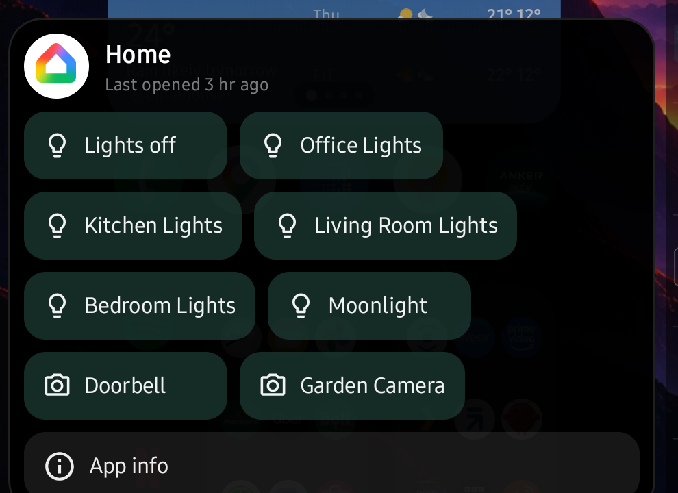

▦
The grid, your way
Columns, rows, icon size, labels on or off, folders that open where you tapped.
Android home screen launcher
Every icon opens into its own panel — notifications, shortcuts, a live widget — without ever launching the app. Fast, quiet, and with no internet permission at all, so it cannot phone home even if it wanted to.
The long-press panel
Most launchers give you a shortcut menu. Arcadia gives you the app's whole surface — and keeps it open for as long as your finger stays down.

Everything the app has sent you, including what you have already swiped away, scrollable inside the panel.
The same deep links the app publishes to Android — tappable without letting go of the icon.
Any one widget the app offers, running inside the panel. Not a picture of one.
Keep the first finger down and scroll or tap with a second. The panel closes when you decide, not when Android decides.
App Blocks
Pull any app's automation shortcuts straight onto the home screen or into its panel. Smart-home scenes, routines, quick actions — whatever the app exposes, Arcadia surfaces.
Everything else
Columns, rows, icon size, labels on or off, folders that open where you tapped.
One app lives on the page left of home. One swipe and you are in it.
Two taps on empty space locks the screen — and your fingerprint still unlocks it, unlike the usual trick.
Take anything off home, dock and search without uninstalling it.
Counts on icons, and the full history on the home screen when you want it.
Hold a clock app for today's times, worked out on the device — never fetched.
Privacy
Arcadia does not declare Android's INTERNET permission. Without it the
operating system refuses every outbound connection the app could attempt. That is
enforced by the platform, not promised in a policy you have to trust.
INTERNET permission
No analytics or crash reporting
No ads, no ad SDK
No accounts, no sign-in
No precise location
No all-files access
Notifications and approximate location are read on your device and stay in Arcadia's private storage. Uninstalling takes all of it with them. Read the policy.